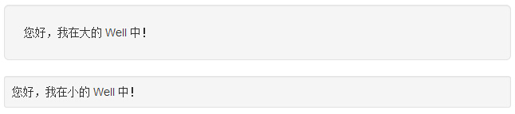

Bootstrap Well
Well 是一种会引起内容凹陷显示或插图效果的容器 <div>。为了创建 Well，只需要简单地把内容放在带有 class .well 的 <div> 中即可。下面的实例演示了一个默认的 Well：
<!DOCTYPE html> <html> <head> <title>Bootstrap 实例 - 默认的 Well</title> <link href="/bootstrap/css/bootstrap.min.css" rel="stylesheet"> <script src="/scripts/jquery.min.js"></script> <script src="/bootstrap/js/bootstrap.min.js"></script> </head> <body> <div class="well">您好，我在 Well 中！</div> </body> </html>
结果如下所示：

尺寸大小
您可以使用可选类 well-lg 或 well-sm 来改变 Well 的尺寸大小。这两个类是与 .well 类结合使用的。这两个类会影响内边距（padding），根据使用的类，Well 会显示得更大或者更小。
<!DOCTYPE html> <html> <head> <title>Bootstrap 实例 - Well 的尺寸大小</title> <link href="/bootstrap/css/bootstrap.min.css" rel="stylesheet"> <script src="/scripts/jquery.min.js"></script> <script src="/bootstrap/js/bootstrap.min.js"></script> </head> <body> <div class="well well-lg">您好，我在大的 Well 中！</div> <div class="well well-sm">您好，我在小的 Well 中！</div> </body> </html>
结果如下所示：
